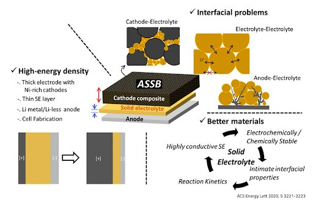
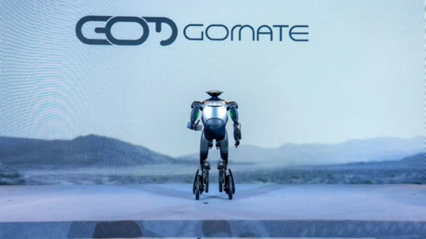
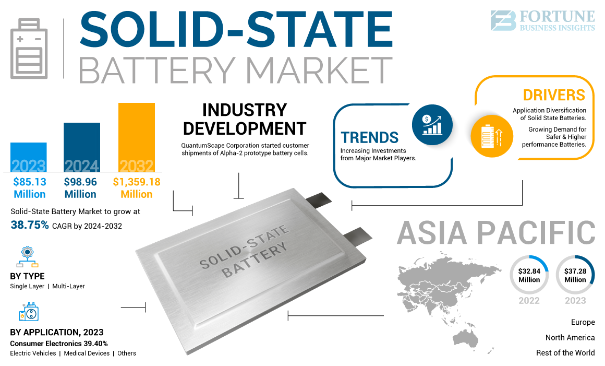
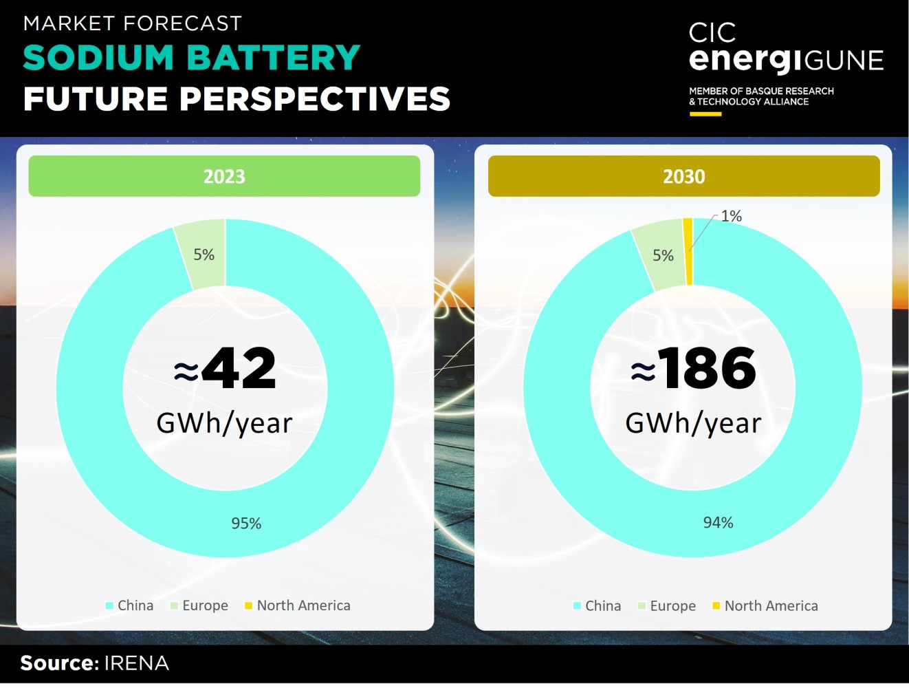
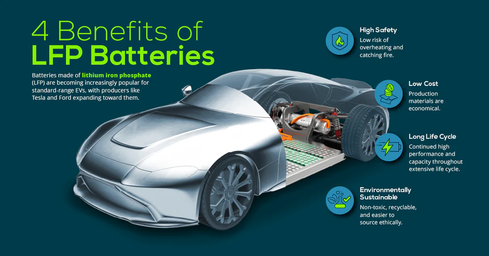
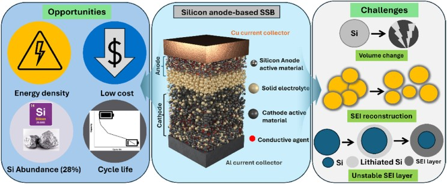
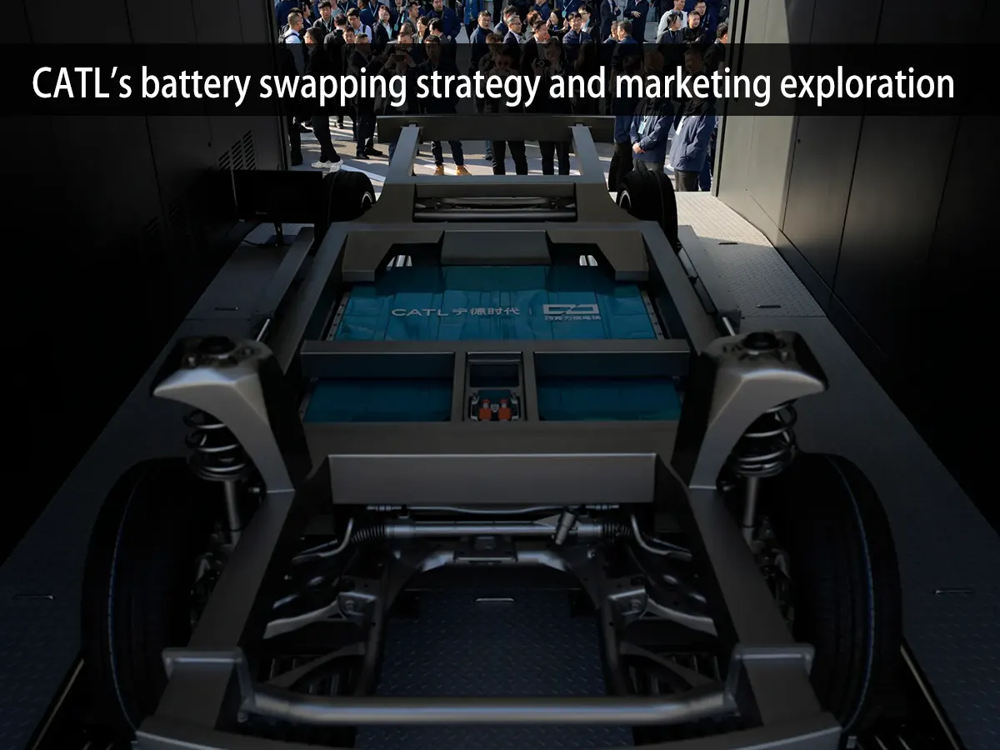
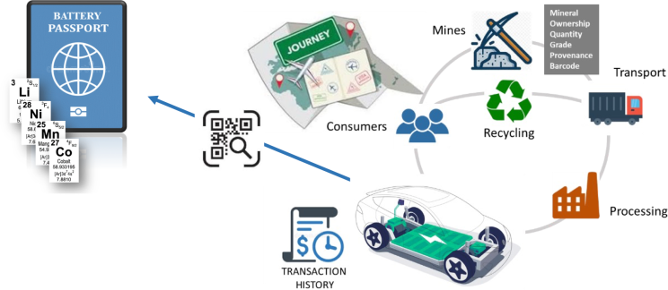
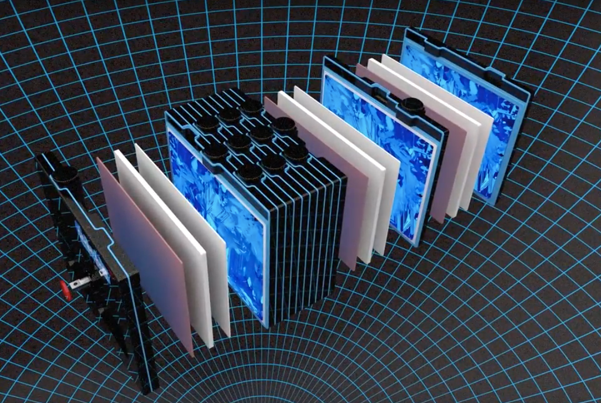

The year 2025 has emerged as a pivotal period in the dynamic realm of new energy battery technology, marked by a confluence of groundbreaking advancements and innovative business models. This era is not merely witnessing incremental improvements; instead, it is characterized by the burgeoning potential for significant technological leaps that are deeply aligned with evolving market demands and supportive policy frameworks, igniting a phase of robust development and intense industry focus.
The Solid-State Revolution Gains Momentum
Solid-state batteries have unequivocally captured the spotlight as the most promising technological trajectory within the new energy battery sector. Their allure stems from a trifecta of compelling advantages: significantly higher energy density, enhanced safety characteristics, and superior performance in low-temperature environments. The year 2025 is widely considered a "watershed year" for the maturation of solid-state battery technology, signaling its transition from promising research to tangible market applications.
On the technical front, semi-solid-state batteries have successfully penetrated the high-end electric vehicle market, with pioneering solutions from industry giants demonstrating remarkable progress. Notably, advancements in energy density have pushed beyond the 400Wh/kg threshold, while cycle life has exceeded the critical 1,000-cycle mark, showcasing the increasing viability of this intermediate technology.

Concurrently, the intensive research and development efforts surrounding all-solid-state batteries are progressing steadily. The industry anticipates the potential integration of all-solid-state batteries into vehicles by 2027, with ambitious targets aimed at achieving an energy density of 500Wh/kg, a figure that could dramatically extend the range and performance of electric vehicles.
Beyond the electric vehicle domain, solid-state batteries are actively exploring and demonstrating their potential in a diverse array of emerging applications. The burgeoning fields of humanoid robotics and the low-altitude economy, encompassing drones and other aerial vehicles, are increasingly recognizing the benefits of solid-state technology. A compelling example is the GoMate robot unveiled, which reportedly experienced a substantial 80% increase in endurance following the adoption of solid-state batteries, highlighting their potential to revolutionize the operational capabilities of such advanced machines.

Despite the considerable progress, the path to widespread commercialization of all-solid-state batteries is not without its challenges. Critical issues such as ensuring robust interface stability between the solid electrolyte and the electrodes, as well as the need to refine and scale up mass production processes, remain urgent priorities for the industry. Furthermore, recent research has raised a potential safety concern regarding lithium metal negative electrodes, suggesting a possibility of more severe combustion risks under certain conditions. This potential hidden danger necessitates further in-depth investigation and the development of appropriate mitigation strategies.

Sodium-ion Batteries Emerge as a Cost-Effective Alternative
Sodium-ion batteries have rapidly gained traction as a compelling alternative in the energy storage landscape, primarily driven by their significant cost advantages – estimated to be 30%-40% lower than lithium iron phosphate (LFP) batteries – and the abundant global availability of sodium resources.

The industrialization of sodium-ion battery technology is gaining momentum, with prominent companies successfully establishing gigawatt-hour (GWh)-level production lines. Industry forecasts predict a substantial increase in the market penetration of sodium-ion batteries in grid-level energy storage, potentially exceeding 15% by 2025. Furthermore, their cost-effectiveness positions them as an attractive option for entry-level (A0-class) electric vehicles, where their penetration rate could reach 10%-15% within the same timeframe.
Technological innovation in the sodium-ion battery sector is also noteworthy. A particularly ingenious development is the "sodium-lithium hybrid" solution, which cleverly combines the excellent low-temperature performance characteristics of sodium-ion batteries with the high energy density advantages of lithium-ion technology.
This hybrid approach expands the potential application scope of sodium-ion batteries to include extended-range hybrid electric vehicles, offering a balanced solution that leverages the strengths of both chemistries. While current market acceptance of sodium-ion batteries remains relatively modest, their long-term prospects appear promising. If large-scale production can successfully drive down costs further, sodium-ion batteries are poised to trigger a disruptive shift in the energy storage market and the low-speed electric vehicle segment.
Lithium Iron Phosphate (LFP) Continues to Innovate and Expand its Reach
Despite its relative maturity, lithium iron phosphate (LFP) battery technology continues to evolve and expand its application scenarios through ongoing material and process innovations. In the realm of high-performance applications, the introduction of a new generation of high-density LFP materials has pushed the energy density of battery cells closer to the impressive 250Wh/kg mark.
This advancement strongly supports the development of high-end electric vehicle models capable of achieving ultra-long driving ranges, potentially exceeding 1,000 kilometers on a single charge. Simultaneously, significant breakthroughs in fast-charging technology, exemplified by innovations that dramatically shorten charging times to as little as 15 minutes, are further enhancing the practicality and appeal of LFP batteries.

From a market perspective, the global demand for lithium iron phosphate cathode materials is projected to reach a substantial 3.884 million tons in 2025, with the domestic market accounting for a dominant 92.7% share. Notably, the adoption of lithium iron phosphate batteries is also increasing in mid-to-high-end electric vehicle models, with their proportion expected to surpass 60%. On the international stage, overseas automakers are increasingly turning to established suppliers for large-scale procurement of LFP batteries, a move that significantly promotes the global dissemination of related technologies.
Silicon Anodes: A Pathway to Enhanced Energy Density
Silicon anode technology has emerged as a critical pathway for achieving significant improvements in battery energy density, owing to its exceptionally high specific capacity, theoretically reaching 4200mAh/g. By employing innovative techniques such as nano-silicon particle engineering and carbon coating, the significant volume expansion issues associated with silicon anodes during charge and discharge cycles are being effectively addressed, leading to substantial improvements in cycle life. Currently, low-silicon content anodes (5%-10%) are already being implemented in mobile phones and high-end new energy vehicles, demonstrating the initial success of this technology.
In terms of application versatility, the silicon content in silicon-based negative electrode materials can be precisely adjusted to suit the specific requirements of different applications. For instance, equipment like drones, which demand high energy density without excessive weight, can utilize negative electrode materials with medium to high silicon content (10%-30%).

Furthermore, the synergistic combination of silicon negative electrodes with sulfide solid electrolytes in solid-state batteries holds the potential to further突破 (break through) existing energy density limitations. Market forecasts indicate a significant increase in the penetration rate of silicon-carbon negative electrodes, potentially exceeding 25% in 2025, which is expected to drive an overall increase of more than 10% in the energy density of power batteries.
Addressing Range Anxiety: The Rise of Battery Swap and Supercharging Infrastructure
Energy replenishment efficiency remains a core concern for electric vehicle users, directly impacting their overall experience. To address this critical pain point, the battery swap model and the development of extensive supercharging networks are progressing rapidly in parallel. The "Chocolate Battery Swap" initiative, aiming to establish a widespread network of battery swapping stations, is steadily advancing, with plans to deploy a significant number of stations by 2025, primarily targeting high-utilization scenarios such as taxis and logistics vehicles. This model effectively tackles concerns related to battery life and the time required for recharging.

Concurrently, the construction of high-speed supercharging infrastructure is accelerating, with the widespread adoption of 800V high-voltage fast-charging technology. The successful establishment of dense charging networks in urban centers, such as the "600-meter charging circle," exemplifies this progress. It is estimated that the number of electric vehicle models supporting supercharging capabilities will exceed a substantial figure in the near future, significantly improving the convenience and practicality of EV ownership.
Closing the Loop: Advancements in Battery Recycling Technology
As the first wave of electric vehicle batteries reaches the end of their usable life in automotive applications, the development and implementation of robust battery recycling technologies have become a critical imperative for building a sustainable closed-loop industrial chain. Significant technological breakthroughs have been achieved in pyrometallurgical and hydrometallurgical recycling processes, demonstrating impressive material recovery rates exceeding 95%.

Regulatory initiatives, such as the "battery passport" system, are promoting refined management and traceability throughout the entire lifecycle of batteries. Driven by policy directives, nations are implementing new standards mandating the establishment of comprehensive recycling systems for power storage batteries.
Policy Drivers and Global Competition
Government policies and international competition are playing a significant role in shaping the trajectory of the new energy battery field. Domestic policies are increasingly favoring emerging technologies like sodium-ion and solid-state batteries through targeted energy storage subsidy programs. Local governments are also implementing specific subsidy policies to further incentivize the development and deployment of electrochemical energy storage solutions.
On the international competitive front, trade policies are introducing new dynamics. Recent increases in tariffs on electric vehicles are prompting automakers to accelerate the establishment of overseas manufacturing facilities. Furthermore, international regulations restricting the supply chain of key minerals are introducing uncertainties and complexities into the global new energy battery industry.
Technology Focus and Market Dynamics
From a technology perspective, solid-state batteries and sodium-ion batteries are commanding the most attention. Solid-state technology is widely viewed as the future frontier of new energy battery innovation, while sodium-ion batteries are gaining prominence as a viable and cost-effective alternative, particularly in the energy storage sector. In terms of market applications, the ongoing advancements in lithium iron phosphate batteries and the practical implementation of silicon-based negative electrode materials are being closely watched by the industry.

Moreover, the dynamic competition between battery swapping and supercharging infrastructure, the significant progress in battery recycling technologies, and the overarching influence of geopolitics on the global supply chain are all prominent and actively debated topics within the current industry landscape.
In conclusion, the new energy battery field in 2025 is a vibrant ecosystem characterized by rapid technological advancements, evolving market dynamics, and strategic policy initiatives. The pursuit of solid-state batteries, the emergence of sodium-ion alternatives, the continued innovation in LFP technology, and the promising developments in silicon anodes, coupled with advancements in energy replenishment and recycling, collectively paint a picture of a sector poised for transformative growth and a fundamental reshaping of how we store and utilize energy.